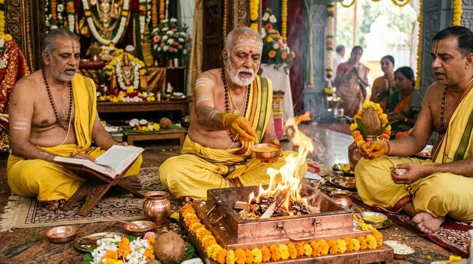

Best Pandit in Kanpur - Vedic Maa Baglamukhi Puja & Havan Booking
For residents and professionals in Kanpur facing career stress, legal disputes, hidden enemies, or business obstacles, Pandit Harshit Sharma conducts authentic Maa Baglamukhi Vedic Havan and Graha Shanti rituals directly from Nalkheda Dham. If you or your family are troubled by court cases & legal disputes, hidden enemies & rivalry, planetary doshas (Graha Shanti), or financial & business slowdowns, book authentic Vedic Anushthan performed strictly with personalized name and gotra from the sacred Maa Baglamukhi Siddhapeeth Nalkheda.

Pandit Harshit Sharma
Maa Baglamukhi Dham, Lakhundar River Bank, Nalkheda (M.P.)
● 24x7 Dedicated Guidance for Devotees in Kanpur
Special Puja & Havan Services for Devotees in Kanpur
Every ritual is conducted strictly adhering to Vedic scriptures, complete satvik havan samagri, and personal name-gotra sankalp.
Maa Baglamukhi Shatru Vijay & Court Case Victory Puja
Powerful Pitambara Mahamantra samput havan for victory in court disputes, neutralization of hidden enemies, and relief from false litigation.
Vyapar Vriddhi, Debt Relief & Kanakdhara Puja
Special Lakshmi-Kuber and Baglamukhi rituals to overcome persistent business losses, heavy debt, financial blockage, and recover trapped funds.
Navgrah Shanti & Kaal Sarp Dosh Nivaran Havan
Vedic planetary yajna to pacify malefic influences of Rahu, Ketu, Shani Sade Sati, Kaal Sarp Dosh, and Manglik Dosh to restore life balance.
Maha Mrityunjaya Jaap & Ayushya Havan
Sacred 125,000 Maha Mrityunjaya mantra chanting and yajna for protection from severe chronic illnesses, accidental perils, and longevity of loved ones.
Early Marriage & Harmonious Marital Life Puja
Special Vedic remedies to remove repeated delays in marriage, eliminate marital friction, and foster harmonious relations between spouses.
Siddha Baglamukhi Raksha Kavach
Consecrated protective talisman charged with divine Maa Baglamukhi beej mantras to shield the wearer from negative energy, evil eye, and adversaries.
3 Easy Steps to Book Online Puja & Sankalp from Kanpur
Share Details & Sankalp Request
Send your name, gotra, birth details (if available), and problem description to Pandit Ji via WhatsApp or direct phone call.
Live Video Darshan & Sacred Havan
At the designated auspicious muhurat, participate live via video call as your personalized sankalp and havan are performed before the sacred dhuni at Nalkheda Dham.
Receive Consecrated Prasad in Kanpur
Upon ritual completion, energized Raksha Sutra, sacred Bhasma, Maa's chunari, and prasadam are safely dispatched to your Kanpur address via Speed Post.
Planning to visit Nalkheda Dham in person?
If you wish to travel from Kanpur to Maa Baglamukhi Dham Nalkheda, please contact us in advance to schedule your puja time and stay arrangements.
"Living in Kanpur, we consulted Pandit Harshit Sharma last month for an ongoing legal dispute. Pandit Ji conducted the Baglamukhi Anushthan with complete transparency via live video call, and we received the blessed prasad within 3 days. By Maa Baglamukhi's grace, the court decision was resolved completely in our favor."
Satyendra Kumar & Family
Devotee • Kanpur (Uttar Pradesh)
Frequently Asked Questions About Puja in Kanpur
Do devotees receive the full spiritual benefit of Puja while attending online from Kanpur? expand_more
Yes, absolutely. According to Vedic scriptures, the patron's (Yajman's) Name, Gotra, and Sankalp are paramount. When Pandit Ji invokes your name and gotra before the consecrated sacred fire at Siddhapeeth Nalkheda, the spiritual vibrations and divine fruits reach you directly.
How many days does it take for the Prasad and energized Raksha Sutra to reach Kanpur? expand_more
The blessed prasad package is dispatched via India Post (Speed Post) or reliable express courier the very next day after puja completion. Typically, it reaches your postal address in Kanpur within 2 to 4 working days.
What are the dakshina and samagri charges for the Puja? expand_more
Dakshina depends on the specific ritual type (Laghu Havan, Samputit Path, or 125,000 Jaap Anushthan) and the number of Vedic Brahmins required. You can call or WhatsApp Pandit Ji directly at +91 87690 84789 for transparent, nominal estimates.
Can Pandit Harshit Sharma travel to Kanpur for personal ceremonies? expand_more
Yes. For major events such as Mahayajnas, Griha Pravesh, Shat Chandi Path, or business inaugurations, Pandit Harshit Sharma visits Kanpur upon special invitation. Advance booking of at least 10 days is required.